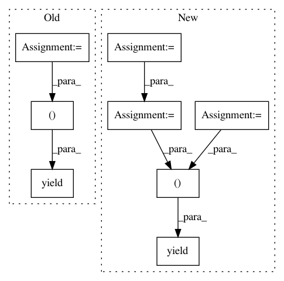

5a68c464caac68e4623f9a7b173bcf24aa719a5c,tensorflow_datasets/text/trivia_qa.py,TriviaQA,_generate_examples,#TriviaQA#Any#Any#Any#,230
Before Change
["DocSource", "Filename", "Title", "WikiContext"])
question = article["Question"].strip()
question_id = article["QuestionId"]
question_source = article["QuestionSource"].strip()
yield "%s_%s" % (os.path.basename(filepath), question_id), {
"entity_pages": entity_pages,
"search_results": search_results,
"question": question,
"question_id": question_id,
"question_source": question_source,
"answer": answer_dict,
}
After Change
for filepath in files:
logging.info("generating examples from = %s", filepath)
fname = os.path.basename(filepath)
with tf.io.gfile.GFile(filepath) as f:
current_record = ""
for line in f:
if line == " {\n":
current_record = line
elif line.startswith(" }"): // Handles final record as well.
article = json.loads(current_record + "}")
current_record = ""
example = parse_example(article)
yield "%s_%s" % (fname, example["question_id"]), example
else:
current_record += line
In pattern: SUPERPATTERN
Frequency: 5
Non-data size: 8
Instances
Project Name: tensorflow/datasets
Commit Name: 5a68c464caac68e4623f9a7b173bcf24aa719a5c
Time: 2019-12-06
Author: adarob@google.com
File Name: tensorflow_datasets/text/trivia_qa.py
Class Name: TriviaQA
Method Name: _generate_examples
Project Name: nl8590687/ASRT_SpeechRecognition
Commit Name: 7c59bf7874bf9e1bb2dda2094765d51edcac5023
Time: 2018-03-28
Author: 3210346136@qq.com
File Name: readdata.py
Class Name: DataSpeech
Method Name: data_genetator
Project Name: anishathalye/neural-style
Commit Name: 45dd5c4dc55f4303e8c491fb79ba11ad1395b696
Time: 2018-10-23
Author: git@elcorto.com
File Name: stylize.py
Class Name:
Method Name: stylize
Project Name: google/unrestricted-adversarial-examples
Commit Name: effaf6ec99d747c81c2b3b4480dfcaa193b41809
Time: 2018-09-19
Author: nottombrown@gmail.com
File Name: unrestricted-advex/unrestricted_advex/mnist_baselines/mnist_utils.py
Class Name:
Method Name: two_class_iter
Project Name: soft-matter/trackpy
Commit Name: c6607119c25d0178245243ef3fdd3d176dd0d8f2
Time: 2020-01-22
Author: anntzer.lee@gmail.com
File Name: trackpy/linking/utils.py
Class Name:
Method Name: coords_from_df